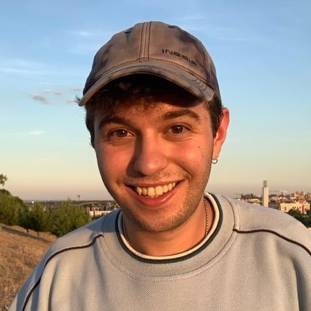
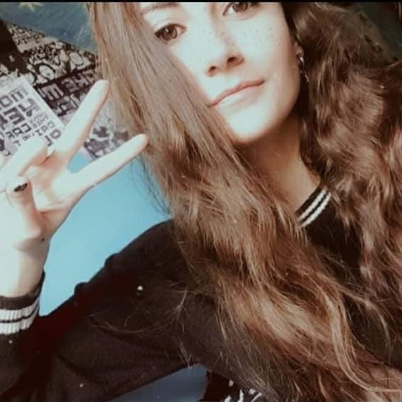
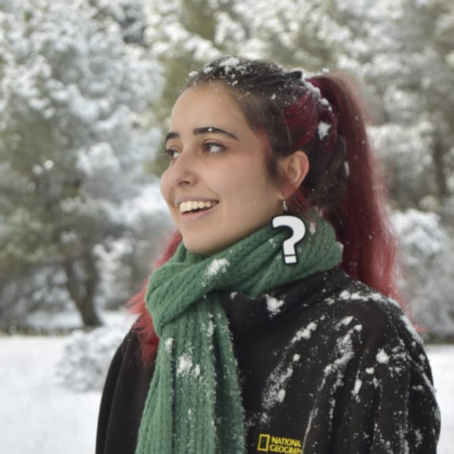
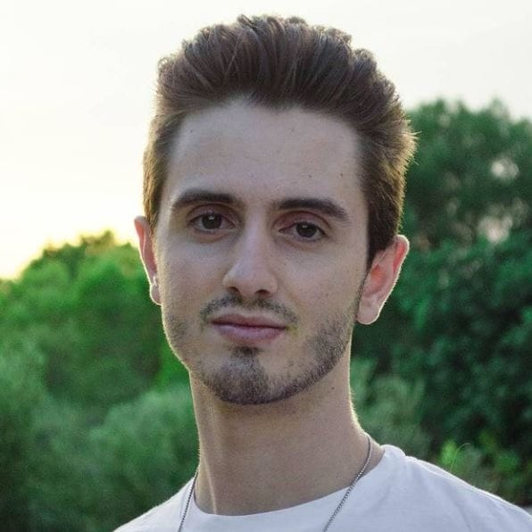
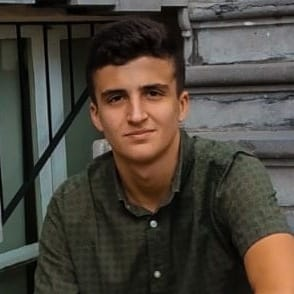

A continuación os presentamos al equipo:
MARCOS DE LA FUENTE SILVA - marcdela@ucm.es - Marcos es extrovertido y risueño, sus aficiones son ir de ruta al campo y leer sobre ciencia ficción. Es scout y monitor de ocio y tiempo libre y adora educar en valores a través del juego a chavales y chavalas entre los 11 y los 14 años de edad.
BELÉN GARCÍA PUENTE - beleng11@ucm.es - Belén es una amante de la siesta y una chica fitness a la que le encanta el deporte. Además quisiera fusionar su afición por la fotografía con la informática siendo desarrolladora de Adobe Photoshop y Adobe Premiere.
SILVIA EGIDO DÍAZ - segido@ucm.es - Silvia es una chica prudente y asertiva. Le gusta tocar la guitarra y las croquetas. Uno de sus mayores hobbies es ver películas de terror y las series de thrillers y policíacas. Le gusta coleccionar bolas de nieve.
MIQUEL VERA RAMIS - mivera@ucm.es - Miquel es un mallorquino que adora las ensaimadas y la sobrasada de su tierra. Le gusta bailar y escuchar hip-hop y lleva en una academia desde los 7 años, hasta imparte actualmente clases. Le encanta la astrología y es un fan incondicional de los horóscopos.
JESÚS ANACLETO NUÑEZ-CACHO ARIAS - jesusnun@ucm.es -Jesús, amigo de sus amigos y enemigo de nadie, juega al fútbol y le encanta los perros. Tiene un grupo de música con sus amigos del colegio y tocan rock alternativo en garitos de Malasaña, Madrid. Le encanta cocinar, sobretodo la repostería.
ALDAIR MALDONADO HONORES - aldairfm@ucm.es -Aldair es un chico inteligente con recursos donde sus aficiones son la gastronomía y el canto de ópera. Le gusta la jardinería y tiene su propia plantación en su parcela. Además le encanta viajar, y quisiera vivir de mayor en Alemania.
GONZALO MENESES VICENTE - gmeneses@ucm.es - Gonzalo es sociable y gracioso, y le gusta los retos y la tortilla de patata. Es fan de la cultura asiática, del K-pop y el anime. Su sueño es viajar a Japón y trabajar y vivir allí una temporada. Creyente e impartidor de clases de catequesis.
